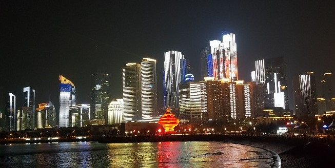

군대가 한달도 안남은 친구 승호는 여행가자는 노래를 불렀다. 그에 대한 대답으로 우린 비행기 티켓 중 제일 싼 중국 칭다오행 티켓을 예약했다. 한창 우한 폐렴이 시작될 시기라 부모님의 염려에도 불구하고, "별로 심하지 않다", "마스크만 잘하면 된다"며 설득시켰다. 마음으로는 걱정도 조금 있었지만 간만에 여행이라 설레는 마음이 더 컸다.
비행기 시간이 새벽인터라, 우린 하루 전날 인천공항행 마지막 버스를 타고 미리 공항에 도착해 공항 찜질방에서 자기로 했다. 새벽인데도 공항에 사람은 많았고 앉을 곳도 당연히 없었다. 찜질방 가격은 비쌌다. 하지만 찜질방 아니면 잘곳이 없기에 찜질방 줄을 섰다. 아뿔싸! 줄을 길게 섰는데, 줄어들 기미가 보이지 않았고 우린 떠돌며 잘 곳을 찾기로했다. '이럴줄 알았으면 일찍자고 택시타고 올걸' 후회했다. 불빛이 있는 곳은 사람들이 모두 자리를 차지하고 있었고 우린 구석 추운곳에서 패딩을 껴안고 쪽잠을 잤다.
불편하게 얼마 잠을 자지도 못하고 여행 당일이 됐다. 한명은 감기에 걸렸다. 여행 첫날은 망할 것 같은 예감이 들었다. 조금 빨리 비행기에 타고 우린 모두 비행기가 이륙하기도 전에 모두 잠들어버렸다. 눈떠보니, 중국에 도착해 있었다. 공항을 나오자마자 낯선 사람이 말을 걸었다. 싼가격에 숙소에 데려다 주겠다고 했다. 중국에 오기 전에 나는 중국에 대한 좋지 않은 소문을 많이 들은 터라 겁이 났다. 친구들에게 절대 안된다고 않좋은 일 당하면 어쩌냐고 말렸다. 하지만 친구들은 싸다는 이유로 덜컥 그 낯선 사람의 제안에 수락해버렸다. 숙소에 가는 내내 나는 긴장했다. "설마 이상한데 데리고 가지는 않을까?" 전날에 잠을 제대로 자지 못해 피곤함에도 불구하고 핸드폰 GPS를 계속 보고 있었다. 다행이 무사히 숙소에 도착했고 2시간정도 잠을 자고 여행하기로 했다.
중국에서 첫끼니로 샤오롱바오 맛집을 찾아가기로 했다. "딘타이펑 - 마리나 시티점"은 마리나 시티를 찾아와 공원으로 들어가기 전에 있었다. 한자를 몰라도 유명한 곳인지 주변보다 빨갛게 화려하게 되어있었다. 한글 메뉴판이 있고 베스트메뉴도 쉽게 알아볼 수 있어서 주문을 수월하게 할 수 있었다. 우린 샤오롱바오, 파이구볶음밥, 국수를 시켰다.
바오롱샤오 맛있게 먹는 법을 따라 먹었다. 입안에 육수가 퍼지면서 속이 꽉차 있었지만 그렇게 맛있다고 할 정도는 아니였다. 입에 맞는 친구들은 몇몇 있었다. 파이구볶음밥은 갈비볶음밥인데 조금 짜고 기름졌었다. 맛은 좋았다. 가격은 중국 물가에 비해 조금 비싼편이었다.
밥을 먹고 주위에 있는 마리나시티에 한번 가보기로 했다. 들어가려고 봤더니 낮인데도 불구하고 불이 다 꺼져 있었고 몇몇 빈 점포도 보였다. 장사를 않하는 것 같았다. 어쩔 수 없이 발걸음을 돌렸다.
다음 향한 곳은 "피차이위엔 꼬치거리". 주위에 먹을 것, 옷, 신발가게가 쫙 늘어져있다. 꼬치중에는 돼지는 기본이고, 소, 양, 오징어, 불가사리, 조개 등 "이런것도 먹을 수 있어?" 하는 생물도 있었다. 향신료 냄새가 가득하고 신기한 볼거리도 많이 있었다. 꼬치를 먹어보니 어느 꼬치든 향신료는 기본이고 혀가 조금 얼얼해졌다. 혀가 얼얼해져 주변에 있는 꽈배기와 희한한 맛의 음료로 혀을 달랬다. 피곤했던 여행 첫째날이 끝나고 숙소에서 맥주, 과일과 한국과자와 모양은 비슷하지만 맛이 조금 다른 중국과자를 먹으면 첫째날을 마무리했다.
재수가 없다. 아침부터 비가 내렸다. 계획이 틀어졌다. 일어나자마자 다시 여행 계획을 짰다. 한참뒤 밥을 먹으러 나섰다. 아무도 우산을 챙겨오지 않아 가위바위보로 우산사오기 내기를 했는데, 아싸리 내기에서 이겼다.아침은 완허춘에서 해결하기로 했다.
완허춘은 중국 프렌차이즈 식당이다. 주문하는 곳에 음식 사진이 크게 나와 있어 주문은 어렵지 않았다. 대표메뉴는 파이구미판, 한국의 감자탕과 유사한 맛이다. 밥, 반찬과 콜라가 같이 나오는데 콜라가 시원하지 않았다. 조금 간장맛이 나는 것 같지만 감자탕을 많이 먹는 한국인에게는 잘 맞는 음식이라는 생각이 들었다.
비가 와 여행지는 한정적이었다. 다음 관광지는 우전박물관이다. 우편 전화에 대한 역사를 기록해 놓았다. 설명은 한자로 되어있어 이해하지 못했고 스탬프와 기념품이 가득 전시되어 있어 볼 거리로 충분했다. 구경하다 보면 마네킹이 전화를 하고 있는데, 사람인줄 알고 깜짝 놀랐다. 우전박물관 위층에는 분위기 있는 카페가 있어 여유롭게 쉴 수 있었다. 카페엔 빨간 글씨로 적힌 경고문 같은게 있었는데, 만지지 마시오인가? 추측하며 우리는 조심스럽게 행동했다. 알고보니 계단조심이었다.. ㅎ하하하
허기가 진 우리는 훠궈로 유명한 운소로 미식거리에 있는 "통더라이"로 갔다. 여기도 역시 한글 메뉴판이 준비되어 있었다. 우리가 주문한 훠궈는 빨간 탕과 흰 탕으로 나누어져있었다. 샤브샤브와 유사하게 고기와 야채를 집어넣어 우리가 만든 소스에 찍어 먹었다. 고기를 포함한 납작두부, 새우완자와 목이버섯은 입맛에 맞았다. 맛도 샤브샤브와 거의 똑같아 한국음식을 먹는 것같이 너무 맛있게 잘먹었다.
중국하면 생각나는 짝퉁. 다음은 짝퉁시장인, "찌모루시장"이다. 그곳에 명품이 가득했는데, 대부분 진짜와 유사했다. 짝퉁에서도 S,A급 등 급이 나뉜다는 사실을 처음 알게 되었다. 나는 형의 선물로 명품 지갑을 사기로했다. 상인들은 한국사람을 많이 상대해 보았는지, 웬만한 한국말은 대부분 능숙했다. "싸게 줄게요", "구경만 해요" 한국말을 들으니 친근했다. 유투브에서 짝퉁시장에서 흥정하는 법을 본 적이 있는데, 그것을 직접 하게 될 줄은 몰랐다. 첫번째, 상인이 가격을 제시하면 1/2로 낮추어 말해라. 당연히 안된다고 말한뒤, 절반의 가격과 상인이 제시한 가격의 중간쯤을 다시 제시했다. 이쯤에서 두번째, 안산다고 나가는 척을 한다. 이 방법을 사용하고 조금 더 낮은 가격에 물건을 살 수 있었다. 흥정하는 것을 재미있었다. 짝퉁시장에서 나는 백화점 VIP라도 된것 같았다.
저녁은 "궤가미도"의 마라롱샤이다. 마라롱샤는 이름에서 유추가능한 마라소스에 요리한 가재이다. 가재의 크기는 두 손가락만했고 손으로 까서 먹어야 한다. 어떻게 가재를 까야하는지 모른 우리는 인터넷에 검색했다. 먼저 머리를 따고, 배를 꾹 눌러서 가른뒤 살을 조심히 꺼내 먹으면 된다. 이것도 향신료 맛이 진하고 혀가 얼얼하다. 짭잘하고 매운 양념이 중독성이 있었다. 하지만 단점, 까기 귀찮다. 먹다가 손이 베였는데 향신료때문인지 욱신욱신했다. 가격은 조금 비싼편이다. 여행 두번째날을 틀어진 계획에도 알차게 보내 뿌듯했다.
날씨가 금방 풀려 다행이다. 계획대로 아침엔 중국하면 먹어야 한다는 베이징덕, "진취덕"이다. 5.4광장이 근처에 있지만 밤에 봐야 이쁘므로 일단은 패스했다. 문앞에는 요리사 모자를 쓴 오리가 반기고 있었다. 빨갛고 거대한 문은 고급져 보였다. 우리는 메뉴가 고기라 푸짐하게 시켰다. 갑자기 요리사가 오더니 우리 테이블 옆에서 직접 오리를 썰어주었다. 처음에 소스를 찍어 먹는데 느끼하고 바삭한데 맛있었다. 만두피에 오이, 양파와 고기를 싸서 소스에 찍어먹으면 고기의 느끼함을 덜어주어 맛있었다. 하지만 그래도 느끼해서 많이 먹지는 못했다.
다음은 칭다오 하면 맥주! "맥주 박물관"이다. 사실 칭다오에 온 이유도 맥주 때문이다. 박물관은 거대했고 깊은 역사가 눈에 보였다. 외관은 유럽풍의 느낌이 물씬 들었다. 과거 칭다오 맥주의 시작과 역사를 보여주는 것 같았는데 중국어로 되어있어 역시 이해는 하지 못했다. 과거부터 현재까지의 칭다오 맥주 디자인이 쭉 전시되어 있었는데 체육관 만한 크기의 벽에 가득찰 정도였다. 현재 칭다오 맥주를 만들고 있는 공장의 일부도 볼 수 있었고, 술을 먹었을때의 어지러움 겪어볼 수 있는 체험의 장 있었다. 당연히 맥주 기념품점이 있었고 꿀땅콩과 맥주도 제공하였다. 맥주공장에서 맥주를 먹으니 신선한 맛이 그대로 전해졌는지 더욱 맛있었다.
과거부터 현재까지의 칭다오 맥주 디자인이 쭉 전시되어 있었는데 체육관 만한 크기의 벽에 가득찰 정도였다. 현재 칭다오 맥주를 만들고 있는 공장의 일부도 볼 수 있었고, 술을 먹었을때의 어지러움 겪어볼 수 있는 체험의 장 있었다. 당연히 맥주 기념품점이 있었고 꿀땅콩과 맥주도 제공하였다. 맥주공장에서 맥주를 먹으니 신선한 맛이 그대로 전해졌는지 더욱 맛있었다.
다음으로는 "잔교"로 향했다. 잔교는 배를 접안시키기 위해 물가에 만들어진 시설이다. 등대처럼 바다에 있고 다리를 통해 육지와 멀리 연결되어 있었다. 잔교의 모습은 바다위에 성처럼 보였다. 다리를 걸어 가는데, 겨울이고 바다라 그런지 바람이 세게 불어 많이 추웠다. 그럼에도 불구하고 관광객들은 많이 있었다.
잔교에서 나와 택시를 타고 다음 목적지를 말했다. 목적지 중간쯤 왔는데 택시 미터기가 꺼져 있는 것을 확인했다. 왜 꺼져있지 의심하며 목적지에 도착했는데, 우리의 생각보다 더 많은 돈을 요구했다. 택시기사와 실랑이를 벌이다가. 여행의 기분을 망치고 싶지 않아 결국 요구하는 돈은 주고 내려버렸다.
벌써 저녁이 되어 근처에 있는 큰 마트에 있는 중국식 마라탕을 먹었다. 한국에서 마라탕을 한번 먹고 혀가 감각이 없을 정도로 얼얼해 진뒤, 다시 마라탕을 먹어본적이 없다. 하지만 중국의 마라탕은 뭔가 쫌 달랐다. 마라 1단계를 선택해서 그런지 몰라도 하얀국물인데 마라맛이 많이 심하지않았고 얼큰한 맛이었다. 막 기억나는 맛은 아니었지만 생각보다 맛이 있어 남기지 않았다. 국물까지 열심히 먹고 있는데, 친구가 이런 말을 했다. "중국에서는 경제적으로 어려운 사람들이 국물까지 먹는다는 말이 있데!" 그 사실을 듣고 국물 먹는것을 멈추었다.
마지막 여행 코스를 장식하게 될 곳은 5.4 광장이다. 아침에도 빨간 조형물이 눈에 띄게 보였는데, 밤에 보니 더 그것밖에 안보였다. 5.4광장과 멀어지며 올림픽 요트 경기장쪽으로 가며 보는 야경은 아주 예술이다. 5.4광장 뒤에 거대한 빌딩에서 나오는 빛과 이미지가 여행의 마지막을 더욱 아쉽게 했다. 우리는 오랜 시간동안 야경을 구경했다. 5.4광장을 간다면 꼭 밤에 가는 것을 추천한다. 마지막으로 올림픽 요트 경기장으로 갔다. 다양한 국기가 양쪽으로 쭉 걸려있는데 마치 내가 나라를 대표하여 시상식에 나가는 상상을 하게 하며 나를 설레게 했다. 그 중 우리나라 국기는 애국심이 더 불타게 했다. 마지막 날은 추웠지만, 우린 너무 아쉬워 오래 같은 자리에 머물렀다. 다음 여행에서도 이런 두근대는 마음을 느낄 수 있을까?